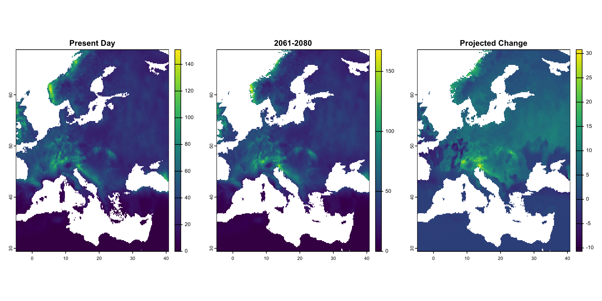

|---------|---------|---------|---------|
=========================================
GeoFinal
Geo-data and Methods in R:
1: Species 1 Distribution Modelling
The task: run linear models to predict the present day distribution of species 1.
Here, my chosen species 1 is: Myzus persicae, the green peach aphid.

Which set of climatic variables best explains the current distribution of the species?
In order to run linear models to predict the present-day distribution of M. persicae, I had to first understand which climate variables would be be important in predicting its distribution.
In order to analyse this, I first generated a full model using all 19 bioclimatic variables that are included in the WorldClim Database. This full model would hopefully explain the data very well, but would likely to experience a lot of overfitting, due to the large quantity of variables it introduces.
It was clear under testing that many of the bioclimatic variables are correlated. This is logically acceptable, as they are mostly underpinned by temperature- and precipitation- based metrics (Clim, n.d.). However, the nature of their correlations was difficult to divine from the traditional plot, so I determined to derive a more contrived method.
In light of this, I decided to use the following approach:
i) I calculated the variance inflation factor (VIF) for each model, and removed the variable which demonstrated the most multi-colinearity (and would therefore be contributing to the overfitting problem the most)
ii) I then compared the Akaike Information Criteria (AIC) for each model. If the AIC had decreased (indicating lesser overfitting, and therefore a better model), I iterated the procedure. If the AIC increased (indicating that I had removed a variable that was highly important for the model to explain the observed data), then I put this variable back into the model, and considered it “safe”, for the remainder of my reduction procedure
iii) I continued this process until I had generated the lowest AIC possible, demonstrating the best fitting model with the least number of variables included.
This approach is partially limited, as it does not take into account the biological relevance of each variable. As such, future approaches might wish to rank the biological relevance of each of the 19 variables, and integrate this into a weighted system, alongside the statistical approach I employed, to generate the best explanatory model in light of both statistics and biology. However, this would rely on a great detail more research upon M. persicae, and it’s reliance upon bioclimatic variables, than has yet to be published. For example, whilst there is research on the effects of the minimum temperature of the coldest month (O’Doherty 1985), and the temperature annual range (Alford 2012); little else is available in the published literature.
Ultimately, the set of climatic variables that best explains the current distribution of M. persicae, according to my model, are:
i) the minimum temperature of the coldest month (bio6; which has already been shown to be biologically relevant (O’Doherty 1985))
ii) the temperature annual range (bio7; which has also already been shown to be biologically relevant (Alford 2012))
iii) the mean temperature of the wettest quarter (bio8)
iv) the mean temperature of the warmest quarter (bio10)
v) the precipitation of the driest month (bio14)
vi) the precipitation seasonality (bio15)
vii) the precipitation of the wettest quarter (bio16)
viii) the precipitation of the coldest quarter (bio19)
Whilst, according to my VIF calculations, some of these variables are still correlated, and there are also many variables included in the model (which reflects the complexity of biogeographical data), I believe that this approach demonstrates the best way of finding which climatic variables best explains the current distribution of M. persicae, with the current pre-existing literature. In order to generalise this to other species, it would be ideal for future researchers to generate a function, for the iteration of this approach, for the WorldClim variables.
Presenting a map of its current distribution:
My map of the current M. persicae distribution shows that the species is likely to be present in Eastern UK, North-West Scandinavia, Southern Greece and Italy, Northern and Southern France, Northern Germany, Poland, Lithuania, Latvia and Estonia; as well as diffusely around mainland Europe. Notably, M. persicae appears to be absent through most of the mainland, though.
2: Species 2 Distribution Modelling
The task: run linear models to predict the present day distribution of species 2.
Here, my chosen species 2 is: Prunus persica, the peach tree. I chose this because M. persicae is an aphid pest which feeds upon the peaches (Verdugo, 2016); thus, their relative distributions are of interest.

Once again, in order to run linear models to predict the present-day distribution of P. persica, I had to first understand which climate variables would be be important in predicting its distribution. In order to analyse this I used the same method as described above, for continuity.
Here, I found that the bioclimatic variables that best explains the current distribution of P. persica, according to my model, are:
i) annual mean temperature (bio1)
ii) isothermality (bio3; which has already been established as biologically relevant: (Bielenberg 2022))
iii) the temperature annual range (bio7)
iv) the mean temperature of the wettest quarter (bio8)
v) the mean temperature of the driest quarter (bio9)
vi) the mean temperature of the warmest quarter (bio10)
vii) the mean temperature of the coldest quarter (bio11; which has already been established as biologically relevant: (BIOSCIENCE 2021))
viii) the annual precipitation (bio12; which has already been established as biologically relevant: (Ighbareyeh 2019))
ix) the precipitation of the wettest month (bio13)
x) the precipitation seasonality (bio15)
xi) the precipitation of the driest quarter (bio17)
The is interesting, because the only bioclimatic variables that appear to best explain the distributions of both M. persicae and P. persica, under my modelling approach, are the temperature annual range (bio7), the mean temperature of the wettest quarter (bio8) and the mean temperature of the warmest quarter (bio10). Notably, all other bioclimatic variables are then shared in the two explaantions of the distributions of my two chosen species. To this end, please see the SUPPLEMENTARY MATERIALS at the end of this write-up, for an appreciation of each of the variables. I will return to this point in the future predictions part of my write-up.
My map of the current P. persica distribution shows that it is likely to be present throughout much of the UK, Eastern Spain, France, Germany, Western Poland, Italy and Scandinavia. As such, these maps appear to indicate a potential overlap with M. persicae, thus corroborating our biological hypothesis. This therefore warrants further investigation.
3: Distribution Overlap
The task: plot the overlap in distribution of the two species. Devise and calculate a metric for the degree of overlap between their ranges, explaining how you calculated it.
Plot the overlap in distribution of the two species…
In order to plot the overlap in distribution between M. persicae and P. persica, I first needed to introduce a buffer distance of 80km, as this is the reputed dispersal capacity of an aphid (AHDB 2024). However, this is a generalisation, and this analysis would be improved by a supplementary study which discovered the dispersal capacity of M. persicae itself.
An individual aphid can disperse up to 80km!
Devise and calculate a metric for the degree of overlap between their ranges, explaining how you calculated it.
In order to devise and calculate a metric for the degree of overlap between the ranges of M. persicae and P. persica, I decided to use the overlap area according to the buffered distribution regions, in order to allow for the mobility of M. persicae to travel. To calculate this, I used the extended expected distribution of species 1, multiplying this by my resampled expected distribution of species 2 (so that the extents matched), to generate a new raster layer. Summing the overlap within this raster layer shows the overlapping distributions of M. persicae and P. persica.
[1] "Total overlap area (sum of raster cells): 22882"Ultimately, my map of the overlapping distributions of M. persicae and P. persica shows that there a significant degree of overlap between M. persicae and P. persica. This is quantified as 22882 raster cells, as shown just beneath my overlap plot. Visually, we can perceive that the overlap extends to almost all of the presence datapoints for both species (excluding 2 P. persica points in the East), and extends also to where the points are not plotted, as a result of the buffer.
4: Interspecies Distribution Dependence
The task: use a linear model to test whether the distribution of species 1 at the present time depends on the distribution of species 2, while also taking account of the effects of climatic variables.
Call:
lm(formula = pg1_values ~ pg2_values, data = present_overlap_model_data)
Residuals:
Min 1Q Median 3Q Max
-0.39081 -0.01629 0.01365 0.01529 0.97038
Coefficients:
Estimate Std. Error t value Pr(>|t|)
(Intercept) -0.0152879 0.0008131 -18.8 <2e-16 ***
pg2_values 0.4066754 0.0023422 173.6 <2e-16 ***
---
Signif. codes: 0 '***' 0.001 '**' 0.01 '*' 0.05 '.' 0.1 ' ' 1
Residual standard error: 0.1438 on 41826 degrees of freedom
(23110 observations deleted due to missingness)
Multiple R-squared: 0.4189, Adjusted R-squared: 0.4189
F-statistic: 3.015e+04 on 1 and 41826 DF, p-value: < 2.2e-16Ultimately, this summary of my model shows that there a high degree of statistical signficance between pg2 (which is a proxy for the species distribution of P. persica) and pg1 (which is a proxy for the species distribution of M. persicae), to the degree of <2e-16. This would insinuate that there is a relationship between the distributions of M. persicae and P. persica.
Moreover, approximately 41.5% of pg2 variation is explained by pg1, according to our Adjusted R-Squared. Whilst this is not low, I would not define a 41.5% level of explanation as “dependence” of M. persicae distribution on P. persica without further testing, such as spatial autocorrelation (Hinch 1994).
5: Future Distribution Prediction
The task: predict the future distribution of each species using CMIP6 data for future climate and predict how the degree of overlap in ranges change will change in that time. Do you expect the two species to co-occur more often or less often than at the present?
Predict the future distribution of each species using CMIP6 data for future climate:
Although subtle, for M. persicae, predicting the future distribution appears to demonstrate a greater presence (as indicated by the yellow end of the spectrum, as per convention) in Northeastern Norway; but a reduced presence (as indicated by the purple end of spectrum) in Southeastern Finland, Southwestern Greece, and Orkney
[1] "Range change metrics:"[1] "Current suitable localities: NA"[1] "Future suitable localities: 4"[1] "Number of new suitable localities (expansion): 0"[1] "Number of lost suitable localities (contraction): 8"To quantify this, it appears that there will be a small number of future suitable localities, none of which are new (and indicative of distribution expansion), but some will have been lost since the present (which have been lost via distribution contraction). The exact values change upon iterating the model.
With regards to P. persica, the predicted future distribution changes somewhat more drastically. A swathe of yellow presence is predicted across the UK, Scandinavia and mainland Europe.
[1] "Range change metrics:"[1] "Current suitable localities: NA"[1] "Future suitable localities: 166"[1] "Number of new suitable localities (expansion): 0"[1] "Number of lost suitable localities (contraction): 0"This is indicative of 166 future suitable localities; none of these having been lost by contraction from the present. However, none of them have been gained as new by expansion either; which is indicative of the presence simply fortifying in a distribution which P. persica currently occupies.
Predict how the degree of overlap in ranges change:
[1] "Total overlap area (sum of raster cells): 23031"To predict how the degree of overlap between M. persicae and P. persica will change under future bioclimatic predictions, I utilised the same overlapping area approach as previously outlined, simply under the new dataset.
Do you expect the two species to co-occur more often or less often than at the present?
Here, I found the total overlap area, as the sum of the raster cells, to be 23031; an increase from the present day of 22882, but by a percentage increase of just 0.65%. As such, whilst I expect the two species to occur more often under future bioclimates than at present, this increase is very slight.
However, to return to the point I made at the beginning of this analysis, it appears that the distributions of M. persicae and P. persica are deeply entrenched within bioclimatic variables. Both dependent on variables that are both temperature- and precipitation- related, as well as independently associated with all other variables, we might predict that these species’ distributions will react in a complex manner to the uncertain and unfolding future bioclimatic variables (that are illustrated in the SUPPLEMENTARY MATERIALS).
Even without taking into account their ability as biological entities to adapt and evolve, it is extremely hard to predict how such a highly integrated system will change across a generation. However, these modelling efforts are important - and do have implications for stakeholders such as researchers, and also farmers who are economically dependent upon peach cultivation, and their resistance to aphid pests.
SUPPLEMENTARY MATERIALS:
Temperature is predicted to change within the overlapping species distributions. Perhaps this will affect the species distributions, and their dependence. It has already been shown to be biologically relevant to M. persicae (Alford 2012).
Mean temperature of the wettest quarter is predicted to change within the overlapping species distributions. Perhaps this will affect the species distributions, and their dependence.

Mean temperature of the warmest quarter is predicted to increase within the overlapping species distributions. Perhaps this will affect the species distributions, and their dependence.
Precipitation seasonality is predicted to change within the overlapping species distributions. Perhaps this will affect the species distributions, and their dependence.

Min temperature of the coldest month is predicted to increase within the M. persicae distribution. Perhaps this will affect its distribution.

Precipitation of the driest month is predicted to change within the M. persicae distribution. Perhaps this will affect its distribution.

Precipitation of the wettest quarter is predicted to change within the M. persicae distribution. Perhaps this will affect its distribution.

Precipitation of the coldest quarter is predicted to change within the M. persicae distribution. Perhaps this will affect its distribution.
Annual mean temperature is predicted to increase within the P. persica distribution. Perhaps this will affect its distribution, and consequently the distribution of M. persicae (which is associated with it).

Isothermality is predicted to change within the P. persica distribution. Perhaps this will affect its distribution, and consequently the distribution of M. persicae (which is associated with it). It has already shown to be biologically relevant to P. persica (Bielenberg 2022).

Mean temperature of the driest quarter is predicted to change within the P. persica distribution. Perhaps this will affect its distribution, and consequently the distribution of M. persicae (which is associated with it).
Mean temperature of the coldest quarter is predicted to increase within the P. persica distribution. Perhaps this will affect its distribution, and consequently the distribution of M. persicae (which is associated with it). It has already been shown to be biologically relevant to P. persica (BIOSCIENCE 2021).
Annual precipitation is predicted to change within the P. persica distribution. Perhaps this will affect its distribution, and consequently the distribution of M. persicae (which is associated with it). It has already been shown to be biologically relevant to P. persica (Ighbareyeh 2019).

Precipitation of the wettest month is predicted to change within the P. persica distribution. Perhaps this will affect its distribution, and consequently the distribution of M. persicae (which is associated with it).
Precipitation of the driest quarter is predicted to change within the P. persica distribution. Perhaps this will affect its distribution, and consequently the distribution of M. persicae (which is associated with it).
References
AHDB. 2024. “The UK Aphid Monitoring Network.” https://ahdb.org.uk/knowledge-library/the-uk-aphid-monitoring-network.
Alford, Lucy. 2012. “Effect of Latitude and Acclimation on the Lethal Temperatures of the Peach-Potato Aphid Myzus Persicae.” Agricultural and Forest Entomology, February, 1–13. https://doi.org/10.1111/j.1461-9563.2011.00553.x.
Bielenberg, Douglas, G.,. 2022. “Peach [Prunus Persica (l.) Batsch] Cultivars Differ in Apparent Base Temperature and Growing Degree Hour Requirement for Floral Bud Break.” Frontiers in Plant Science 13 (1): 1–10. https://www.frontiersin.org/journals/plant-science/articles/10.3389/fpls.2022.801606/full.
BIOSCIENCE, FUTURECO. 2021. “Genes Underpinning Peach Tree Adaptation to Climate Change.” FUTURECO BIOSCIENCE, July, 1. https://www.futurecobioscience.com/en/genes-que-sustentan-la-adaptacion-del-melocotonero-al-cambio-climatico/.
Clim, World. n.d. “Bioclimatic Variables.”
Hinch, Scott. 1994. “Spatial Autocorrelation and Assessment of Habitatabundance Relationships in Littoral Zone Fish.” Canadian Science Publishing 51 (3): 701–12. https://doi.org/10.1139/f94-070.
Ighbareyeh, Jehad, M., H. 2019. “Peach (Prunus Persica l. Batsch) Production and Environmental Conditions in Jenin, Palestine.” Netjournals, May, 78–84. https://www.netjournals.org/pdf/NJAS/2019/2/19-025.pdf.
O’Doherty, Rose. 1985. “Studies on the Cold Hardiness of the Peach-Potato Aphid Myzus Persicae (Sulzer).” White Rose eTheses 1 (1): 1–20. https://etheses.whiterose.ac.uk/id/eprint/4413/1/uk_bl_ethos_354043.pdf.
Verdugo, Jaime, A. 2016. “A Review on the Complexity of Insect-Plant Interactions Under Varying Levels of Resources and Host Resistance: The Case of Myzus Persicae-Prunus Persica.” Biotechnologie, Agronomie, Société Et Environnement/Biotechnology, Agronomy, Society and Environment 20 (4). https://doi.org/10.25518/1780-4507.13218.